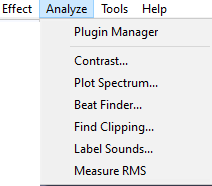

Analyze Menu
| For analyzers that you use often you can use Keyboard Preferences to set up keyboard shortcuts for those Generators. You can also set up a custom shortcut for Repeat Last Analyzer. |
- 
- Many of the analysis tools shipped in Audacity are Nyquist plugins which can be edited in any text editor. See Nyquist Plugins Reference on our Wiki for more details about the Nyquist format. You can download additional Nyquist analysis plugins. The built-in analyzers are LADSPA effects. Some additional LADSPA analysis plugins for Linux can be downloaded from http://www.ladspa.org/.
- The description page for each shipped analysis effect (accessed by the links below) shows an image of the interface and its default settings.
Audacity's Analysis Tools
- There are three built-in LADSPA analysis tools: Contrast, Plot Spectrum and Find Clipping
- There are five Nyquist plugin analysis tools shipped with Audacity: Beat Finder, Regular Interval Labels, Sample Data Export and Label Sounds
- Vamp Analysis Plugins can also be added.
Plugin Manager
Selecting this option from the Analyze Menu (or the Effect Menu or Generate Menu) takes you to a dialog which enables you to load and unload Analyzers (and Effects and Generators) from Audacity. This enables you to customize your Analyze Menu making it shorter or longer as required. For details see Plugin Manager.
See also this list of available Nyquist analyzer plugins on the Audacity Wiki, that you can easily download and add to Audacity.
Backing up or transferring settings
To see how to backup your settings, last used and any user presets you have saved using the button in each analyzer's dialog, see this page.
Built-in LADSPA analysis tools
Contrast... Ctrl + Shift + T Extra
Analyzes a selected, single non-stereo audio track to determine the average rms difference in volume (contrast) between foreground (the speech) and background (music, audience noise or similar). The purpose is to determine if the speech will be intelligible to the hard of hearing.
Plot Spectrum...
Takes the selected audio (which is a set of sound pressure values at points in time) and converts it to a graph of frequencies (the horizontal scale in Hz) against amplitudes (the vertical scale in dB).
Find Clipping...
Displays runs of clipped samples in a Label Track, as a screen-reader accessible alternative to . A run must include at least one clipped sample, but may include unclipped samples too.
Nyquist Plugin analysis tools shipped with Audacity
Beat Finder...
Attempts to place labels at beats which are much louder than the surrounding audio. It's a fairly rough and ready tool, and will not necessarily work well on a typical modern pop music track with compressed dynamic range.
Measure RMS
A simple analyzer to measure the RMS (Root Mean Square) levels in a track.
Label Sounds...
Label Sounds is a tool which can useful to label the different songs or sections (or silences) in a long recording.
There are options to add point labels before or after each detected sound, region labels around each sound, or region labels between each sound (effectively labeling the silences).
| The Label Sounds tool is very useful to label the different songs or sections in a long recording, such as the tracks from an LP or cassette. |
Vamp Analysis Plugins
You can also add some additional analysis tools in the Vamp plugin format for viewing and analysing the descriptive contents of music audio files. Typical things that a Vamp plugin might calculate include the locations of moments such as note onset times and power or fundamental frequency data. Plugins that produce graphs or other visuals will not work in Audacity, only plugins that are suitable for writing to labels.
To add a new Vamp analysis tool, add the plugin's DLL, DYLIB or SO file (and any supplied category (CAT) or RDF (TTL or N3) files) to one of the paths listed in the green box below.
To run a Vamp plugin, select the audio and run the plugin from the menu. An annotated label track appears showing the result.
| Currently Audacity cannot load Vamp plugins from the Audacity "Plug-Ins" folder. |
Vamp plugins are loaded from the following standard directories each time you launch Audacity:
- On all platforms: any directories listed in the VAMP_PATH environment variable
- additionally on Windows:
- C:\Program Files\Vamp Plugins.
- additionally on macOS
- ~/Library/Audio/Plug-Ins/Vamp (user plugins)
- /Library/Audio/Plug-Ins/Vamp (system-wide plugins)
| On Mac the folders that you need may be "hidden". To access them in Finder use or The is in the menu bar at the top of the desktop when Finder is active. |
- additionally on Linux/Unix:
- $HOME/vamp
- $HOME/.vamp
- /usr/local/lib/vamp (user plugins)
- /usr/lib/vamp (system-wide plugins).